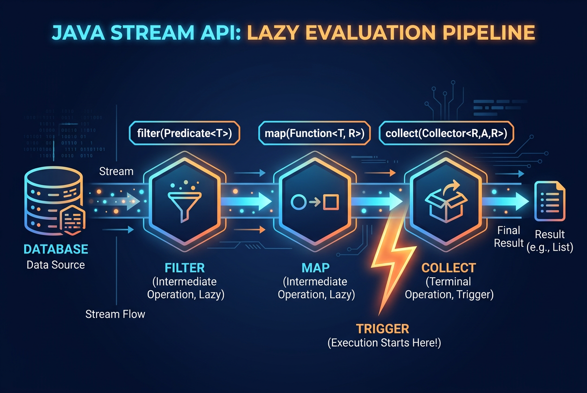
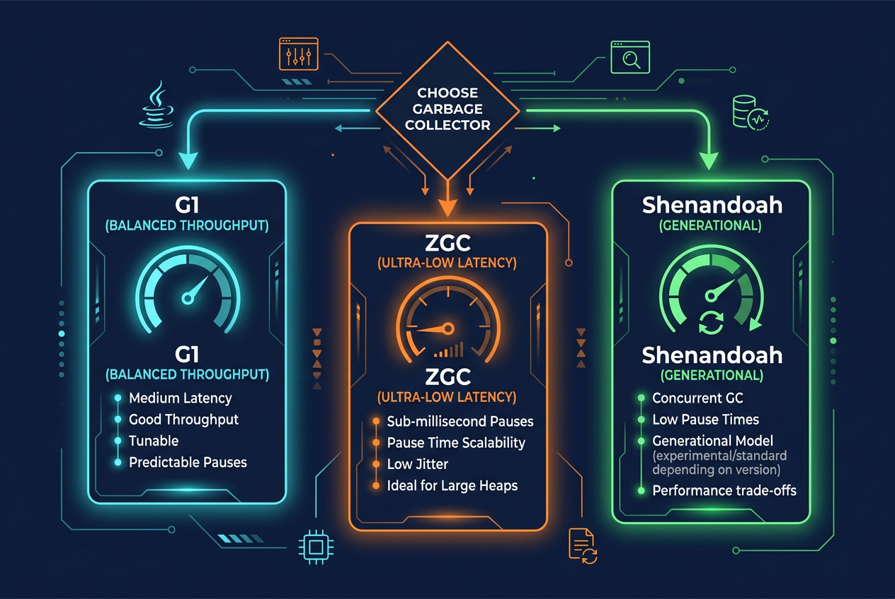
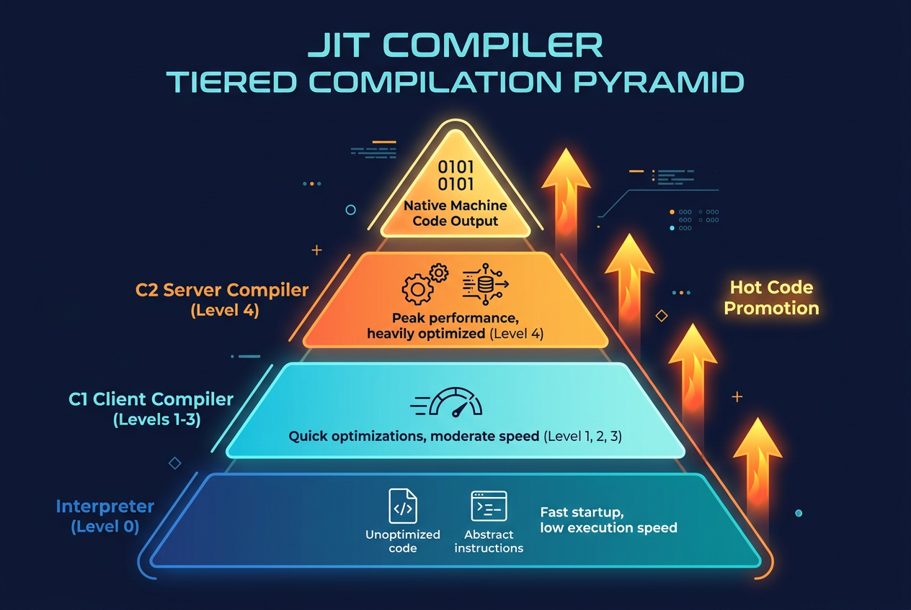

JDK 8 → 17 → 21 → 25：四代 LTS 的关键跃迁与升级实战
标签：Java进阶 · JDK版本演进 · 性能调优 · 生产迁移
一、引子：四代 LTS 的演进主线
- 发布节奏切换：JDK 9（2017）起改为 6 个月一个版本的 train model，每年 3 月与 9 月发版；LTS 从最初每 3 年一个（8 → 11 → 17）调整为每 2 年一个（17 → 21 → 25）。JDK 9 因模块化争议从计划的 2016 年推迟到 2017 年，9 到 16 之间没有 LTS 版本。
- 许可证调整：JDK 8u211 之后 Oracle JDK 商用需订阅付费；JDK 17 起恢复 NFTC（No-Fee Terms and Conditions）免费商用。Adoptium（Eclipse Temurin）、Amazon Corretto、Azul Zulu 等免费发行版在各版本持续可用。
- 技术迁移链路：javax 到 jakarta 的命名空间迁移（随 Spring Boot 3.0 落地）是 JDK 8 到 17 升级路径上的主要工作量来源。
二、版本全景：定位、节奏与许可证

JDK 四大 LTS 发布时间线
2.1 四个 LTS 的定位
| 版本 | 发布时间 | 类型 | 核心定位 |
|---|---|---|---|
| JDK 8 | 2014 年 3 月 | LTS | 函数式编程引入；最后一个免费商用的 Oracle JDK |
| JDK 17 | 2021 年 9 月 | LTS | 许可证新政后首个免费商用版；语言特性成熟期 |
| JDK 21 | 2023 年 9 月 | LTS | Virtual Threads 转正，并发模型革命 |
| JDK 25 | 2025 年 9 月 | LTS | Compact Object Headers、Scoped Values、Leyden 成果落地 |
2.2 发布节奏：从大版本主义到 train model
理解 Java 生态演化，先看发布节奏的两段历史：
- JDK 9 之前：2-3 年一个大版本，功能堆积严重，延期是常态。JDK 9 自己就跳票了三年。
- JDK 9 之后：切换到 6 个月一班的"火车模型"（train model），每年 3 月和 9 月准点发车，特性赶不上车就进下一班预览。
- LTS 节奏：最初每 3 年一版（8 → 11 → 17）；JDK 17 之后收紧为每 2 年一版（17 → 21 → 25）。
这个策略直接影响选型。很多团队在 JDK 8 上一停十年，本质是 9 到 16 期间没有值得冒险的 LTS；JDK 17 是第一个让"该升了"成为共识的版本。
2.3 许可证简史
- JDK 8 及之前：Oracle JDK 在 BCL（Binary Code License）下免费商用。
- 2019 年 4 月起：JDK 8u211 之后的 Oracle JDK 商用需要付费订阅。
- JDK 17 起：Oracle 恢复 NFTC（No-Fee Terms and Conditions），Oracle JDK 重新免费商用，覆盖 17、21、25 这些 LTS。
- 免费发行版生态：Adoptium Temurin、Amazon Corretto、Azul Zulu、微软 OpenJDK 在任何版本上都免费，多数生产团队早已切换。
一句话记忆：Oracle JDK 只有 8u211 之后到 17 之前这个窗口"收费"，17 以后又免费了；发行版选择看合规不看钱包。
2.4 版本号格式
顺带一提：JDK 8 的内部版本号是 1.8，从 JDK 9 起 JEP 223 把格式统一为单数字。老代码里判断版本号的 java.version 字符串逻辑，升级后要记得适配。
三、语言特性演进

Stream 管道：惰性中间操作 + 终端操作触发执行
3.1 JDK 8：函数式革命
JDK 8 一次引入 Lambda、Stream、Optional、java.time 四大件，把 Java 从"命令式老学究"改造成"函数式混合体"。
Lambda 不是匿名内部类的语法糖
// JDK 7：匿名内部类
Collections.sort(names, new Comparator<String>() {
@Override
public int compare(String a, String b) { return a.compareTo(b); }
});
// JDK 8：Lambda 与方法引用
names.sort(String::compareTo);
底层机制值得较真：编译器对 Lambda 使用 invokedynamic 指令，运行时由 LambdaMetafactory 动态生成实现类，而不是编译期生成 MyClass$1.class。用 javap -c -p 反编译能看到差异——匿名内部类多一个 class 文件，Lambda 只有一条 invokedynamic。
Stream：惰性求值是灵魂
List<String> vipEmails = orders.stream()
.filter(o -> o.getAmount().compareTo(new BigDecimal("10000")) > 0)
.map(Order::getCustomer)
.filter(c -> c.getVipLevel() >= 3)
.map(Customer::getEmail)
.distinct()
.sorted()
.collect(Collectors.toList());
filter/map 等中间操作只是搭管道，collect 这类终端操作才触发执行。生产提醒：parallel stream 慎用——它底层是全局共享的 ForkJoinPool.commonPool()，在 HTTP 请求线程里跑 parallel stream，一个耗时任务会拖累所有并发请求。我们线上吃过这个亏，接口超时排查半天，最后定位到一处 parallelStream().forEach 里的远程调用。
Optional 与 java.time：Optional 链式处理可能为 null 的取值；java.time 的 LocalDateTime、ZonedDateTime、Duration 终结了 java.util.Date 的线程安全噩梦和 Calendar 的月份从 0 计数的反人类设计。
3.2 JDK 9-16：过渡特性，后来全部转正
这八年被很多人跳过，但它们奠定了现代 Java 的全部语法。不了解演化过程，用 JDK 17/21 时会觉得这些特性"凭空冒出来"。
JDK 9：模块系统（第八节展开）、JShell、集合工厂方法 List.of()、接口私有方法：
public interface Validator {
default boolean isValid(String input) {
return !isEmpty(input) && checkFormat(input);
}
private boolean isEmpty(String input) { return input == null || input.isBlank(); }
private boolean checkFormat(String input) { return input.matches("[a-zA-Z]+"); }
}
JDK 10：var 局部变量类型推断——注意它是编译期推断，不是动态类型：
var userList = new ArrayList<User>(); // 编译后就是 ArrayList<User>
JDK 11：String 新方法、单文件执行、HttpClient 标准化：
" hello ".strip(); // Unicode 感知的 trim
"hello".repeat(3); // "hellohellohello"
"line1\nline2".lines() // Stream<String>
.forEach(System.out::println);
// $ java HelloWorld.java 单文件直接执行，省掉 javac
JDK 13-15：Text Blocks 三行写 JSON/SQL：
String json = """
{
"name": "张三",
"roles": ["admin", "user"]
}
""";
JDK 14：Records 与 instanceof 模式匹配开始预览，同时上线了 helpful NPE——报错从干巴巴的 NullPointerException 变成 Cannot invoke "String.length()" because "a.b.name" is null，排查效率提升一个数量级。
JDK 16：Records 与 instanceof 模式匹配转正，Stream.toList() 取代 collect(Collectors.toList())。
3.3 JDK 17：特性成熟期
JDK 17 把 14-16 预览的特性全部转正，形成完整的"现代 Java"特性集。标志性的是 Sealed Classes：
public sealed interface Shape permits Circle, Rectangle, Triangle {
double area();
}
public record Circle(double radius) implements Shape {
public double area() { return Math.PI * radius * radius; }
}
public record Rectangle(double width, double height) implements Shape {
public double area() { return width * height; }
}
public record Triangle(double base, double height) implements Shape {
public double area() { return 0.5 * base * height; }
}
密封层级配合模式匹配时编译器能做穷举检查——这是 JDK 21 switch 模式匹配的前提。JDK 17 其余值得记的变化：强封装 JDK 内部 API（--illegal-access=permit 失效）、移除 AOT/JIT 的 Graal 实验接口（用 GraalVM 需单独安装）、移除 RMI Activation、恢复始终严格的浮点语义。
3.4 JDK 18-20：为 21 铺路
- JDK 18：UTF-8 成为默认字符编码（JEP 400，跨平台中文乱码问题的终结点）；Simple Web Server（
jwebserver）零依赖起静态服务。 - JDK 19：Virtual Threads 首次预览（JEP 425）、Structured Concurrency 孵化（JEP 428）。
- JDK 20：Scoped Values 孵化（JEP 429）、Record Patterns 二次预览。
3.5 JDK 21：并发模型与模式匹配的双响炮
Pattern Matching for switch（JEP 441）——密封类 + switch 的完整体验：
public static double calculateArea(Shape shape) {
return switch (shape) {
case Circle c -> Math.PI * c.radius() * c.radius();
case Rectangle r -> r.width() * r.height();
case Triangle t -> 0.5 * t.base() * t.height();
// 密封接口子类全覆盖，不需要 default
};
}
// 带守卫
case Circle c when c.radius() > 100 -> "大圆";
case Circle c -> "小圆";
Record Patterns（JEP 440）——嵌套解构：
record Point(int x, int y) {}
record Line(Point start, Point end) {}
static void printLength(Object obj) {
if (obj instanceof Line(Point(var x1, var y1), Point(var x2, var y2))) {
double length = Math.hypot(x2 - x1, y2 - y1);
System.out.printf("Line length: %.2f%n", length);
}
}
Sequenced Collections（JEP 431）——统一有序集合操作，LinkedHashSet 取尾元素不再需要遍历：
SequencedCollection<String> seq = new LinkedHashSet<>(List.of("a", "b", "c"));
String first = seq.getFirst(); // "a"
String last = seq.getLast(); // "c"
SequencedCollection<String> reversed = seq.reversed(); // [c, b, a]
Virtual Threads 是 JDK 21 的绝对主角，第五节单独展开。另注：String Templates 在 JDK 21 预览、22 二次预览后，因设计争议于 JDK 23 被撤回——升级到 21 用到过 STR."..." 的团队要留意这个语法已不归路。
3.6 JDK 22-24：过渡期
- JDK 22：FFM API（JEP 454）转正；未命名变量
_（JEP 456）：
try {
int result = Integer.parseInt(input);
} catch (NumberFormatException _) {
System.out.println("Invalid number");
}
- JDK 23：原始类型模式匹配预览（JEP 455）、Markdown 文档注释（JEP 467）。
- JDK 24：Stream Gatherers 转正（JEP 485）——自定义中间操作，滑动窗口一行搞定：
List<List<Integer>> windows = Stream.of(1, 2, 3, 4, 5)
.gather(Gatherers.windowSliding(3))
.toList();
// [[1,2,3], [2,3,4], [3,4,5]]
JDK 24 还有两个重量级变化：Class-File API 转正（JEP 484）、虚拟线程解除 synchronized pinning（JEP 491，5.3 节详述）。
3.7 JDK 25：极简语法时代
JDK 25 共 18 个 JEP，其中 7 个从预览转正，最直观的是"Java 也能像脚本一样写"：
// 完整程序，不需要 public class、不需要 static、不需要 String[] args
void main() {
println("Hello, World!");
}
配套的 Module Import（JEP 511）把 import java.util.* 等一堆导入压成一行：
import module java.base;
var list = List.of(1, 2, 3);
var path = Path.of("/tmp");
Flexible Constructor Bodies（JEP 513）——super() 之前终于能做校验：
public class ValidatedOrder extends Order {
public ValidatedOrder(String orderId, BigDecimal amount) {
if (orderId == null || orderId.isBlank()) {
throw new IllegalArgumentException("orderId cannot be empty");
}
this.validatedAt = Instant.now();
super(orderId, amount); // 校验、初始化都在父类构造之前
}
}
其余重点：Compact Object Headers（JEP 519，第七节）、Scoped Values 转正（JEP 506，第五节）、AOT Method Profiling（JEP 515，第六节）、Generational Shenandoah 转正（JEP 521，第四节）、Stable Values 预览（JEP 502，延迟初始化但享受 final 优化）。
四、GC 演进：从"能用"到"极致"
GC 是版本升级最直接的收益来源。四个 LTS 横跨了 Java GC 从"够用"到"极致"的全程。
4.1 起点：Parallel 与 CMS 时代（JDK 8）
JDK 8 默认 GC 是 Parallel（吞吐量优先，适合批处理）；多数 Web 服务选 CMS（低延迟）或 G1（均衡）：
# CMS：低延迟优先，但并发失败会掉进秒级 Full GC
java -XX:+UseConcMarkSweepGC -XX:CMSInitiatingOccupancyFraction=75 \
-Xms4g -Xmx4g -jar app.jar
# G1：平衡型
java -XX:+UseG1GC -XX:MaxGCPauseMillis=200 -Xms4g -Xmx4g -jar app.jar
JDK 8 时代 GC 的四个痛点：CMS 并发失败触发秒级停顿、CMS 内存碎片需定期重启、G1 尚不成熟且 Full GC 单线程（JDK 10 才并行）、PermGen 单独调优且常 OOM。
4.2 G1：从可选到默认（JDK 9-17）
G1 的 Region 化堆设计：堆被切成等大 Region，Young GC 疏散 Eden/Survivor，并发标记后 Mixed GC 只回收部分 Old Region，Full GC 兜底。关键升级时间线：
| 变化 | 版本 |
|---|---|
| G1 成为默认 GC | JDK 9 |
| CMS 标记废弃 | JDK 9 |
| G1 Full GC 并行化 | JDK 10 |
| 可中断 Mixed GC | JDK 12 |
| 归还未用堆给操作系统 | JDK 12 |
| NUMA 感知分配 | JDK 14 |
| CMS 移除 | JDK 14 |
JDK 17 推荐配置：
java -XX:+UseG1GC -XX:MaxGCPauseMillis=100 \
-XX:G1HeapRegionSize=16m -XX:InitiatingHeapOccupancyPercent=35 \
-Xms8g -Xmx8g -jar app.jar
4.3 ZGC：亚毫秒停顿之路（JDK 11-21）
ZGC 用染色指针（colored pointers）+ 读屏障实现并发整理，停顿与堆大小无关。JDK 11 实验、15 转正、21 引入分代（JEP 439）：
# JDK 21 分代 ZGC
java -XX:+UseZGC -XX:+ZGenerational -Xms16g -Xmx16g -jar app.jar
为什么 ZGC 需要分代：非分代模式下每次 GC 扫描整个堆，停顿时长短但扫描开销大、吞吐量吃亏；分代后年轻代高频小范围回收、老年代低频回收，吞吐量提升 10-20%。
实测数据（电商下单链路，16G 堆、8 核）：
| 指标 | G1 (JDK 17) | ZGC 非分代 (JDK 17) | ZGC 分代 (JDK 21) |
|---|---|---|---|
| P99 停顿 | 35ms | 0.5ms | 0.3ms |
| P999 停顿 | 120ms | 1.2ms | 0.8ms |
| 吞吐量 TPS | 12,500 | 11,800 | 13,200 |
分代 ZGC 同时赢下了停顿时长和吞吐量。注意：JDK 24 起非分代 ZGC 被移除（JEP 490），-XX:+ZGenerational 参数也不再接受——默认就是分代。
4.4 Shenandoah 分代（JDK 25）
Shenandoah 与 ZGC 同属低停顿流派，由 Red Hat 主导。JDK 15 转正，JDK 25 引入分代支持（JEP 521）：
java -XX:+UseShenandoahGC -XX:ShenandoahGCMode=generational \
-Xms16g -Xmx16g -jar app.jar
4.5 选型速查

GC 选型速览：按延迟与吞吐诉求分流
| 场景 | 推荐 GC | 关键参数 |
|---|---|---|
| 微服务（<4G 堆） | G1 | -XX:MaxGCPauseMillis=100 |
| 大堆低延迟 | ZGC（分代） | -XX:+UseZGC |
| 交易系统亚毫秒要求 | ZGC（分代） | -XX:+UseZGC -XX:SoftMaxHeapSize=X |
| 批处理/大数据 | G1 或 Parallel | -XX:+UseG1GC 或 -XX:+UseParallelGC |
| 容器内存受限 | G1 + Compact Headers | -XX:+UseG1GC -XX:+UseCompactObjectHeaders |
| Red Hat 生态 | Shenandoah（分代） | -XX:+UseShenandoahGC |
真实迁移案例：订单服务 JDK 8 + CMS、8G 堆，高峰期 CMS concurrent mode failure 触发 3-5 秒 Full GC，上游网关批量超时。迁移 JDK 17 + G1 后 P99 停顿降到 50ms 以内；再升 JDK 21 + 分代 ZGC + 16G 堆，P99 到 0.5ms，业务代码基本感知不到 GC。
五、并发模型革命：Virtual Threads
JDK 21 是继 JDK 8 之后平台最重大的变革，核心就是 JEP 444 Virtual Threads。
5.1 平台线程的账本
传统 Platform Thread 与 OS 线程一一对应：
- 每线程默认 1MB 栈（
-Xss1m） - 创建销毁走
pthread_create/pthread_exit系统调用 - 上下文切换在内核态完成
- 单 JVM 能创建的线程数通常几千到几万
对 I/O 密集的 Web 服务，这意味着：10 万并发就要 10 万个 OS 线程，内存先爆；用 200 个线程的池扛 10 万请求，只能排队。
5.2 机制：把线程从 OS 资源变成 JVM 资源
Virtual Thread 由 JVM 调度，不再 1:1 映射 OS 线程：
- 阻塞时（I/O、sleep、锁等待）自动从载体线程（carrier thread）卸载（unmount），载体线程立刻去跑别的任务
- 阻塞解除后挂到任意空闲载体线程继续执行
- 状态保存恢复靠 Continuation，栈按需增长，初始只占几百字节
三种创建方式：
// 1. 直接启动
Thread vt = Thread.startVirtualThread(() -> doWork());
// 2. 命名工厂
Thread vt2 = Thread.ofVirtual().name("worker-", 0).start(() -> doWork());
// 3. 生产推荐：每任务一线程的执行器
try (var executor = Executors.newVirtualThreadPerTaskExecutor()) {
IntStream.range(0, 100_000).forEach(i ->
executor.submit(() -> {
Thread.sleep(Duration.ofSeconds(1));
return i;
}));
}
5.3 三个坑
- synchronized 中的阻塞会 pinning：JDK 21 里虚拟线程在
synchronized块内做阻塞 I/O 时无法卸载，载体线程被钉住。JDK 24 的 JEP 491 解除了这个限制（阻塞时改用 JVM 内部机制重写锁语义），JDK 21 用户要么升级，要么改用ReentrantLock：
// JDK 21 不推荐：synchronized 内阻塞导致 pinning
synchronized (lock) { connection.read(); }
// 推荐
private final ReentrantLock lock = new ReentrantLock();
lock.lock();
try { connection.read(); } finally { lock.unlock(); }
- 不要池化虚拟线程：设计理念是 one task one thread，拿线程池管理虚拟线程是反模式，直接
newVirtualThreadPerTaskExecutor()。 - ThreadLocal 的内存账：百万虚拟线程各持 ThreadLocal 副本时内存可观，JDK 21 起用 Scoped Values 替代（见 5.5）。
5.4 量级对比
10 万任务、每个阻塞 100ms：200 线程池的 Platform Thread 至少需要 100000 / 200 × 0.1 = 50 秒；虚拟线程 10 万任务同时 sleep，约 0.1-0.2 秒完成。典型基准输出：
Platform Threads (200 pool): 50.12 seconds
Virtual Threads: 0.15 seconds
5.5 Scoped Values（JDK 25 转正，JEP 506）
ThreadLocal 的现代替代，与虚拟线程天然契合：
private static final ScopedValue<UserContext> CURRENT_USER = ScopedValue.newInstance();
public void handleRequest(HttpRequest request) {
UserContext ctx = authenticate(request);
ScopedValue.runWhere(CURRENT_USER, ctx, () -> processRequest(request));
// 作用域结束自动释放，不存在忘记 remove 的内存泄漏
}
public void processRequest(HttpRequest request) {
UserContext user = CURRENT_USER.get();
}
与 ThreadLocal 的本质差异：值不可变（ThreadLocal 可随意 set）；生命周期由作用域界定（ThreadLocal 需手动 remove）；虚拟线程继承零成本（ThreadLocal 需复制）。
5.6 Structured Concurrency（孵化中，JEP 428）
"父任务 fork 子任务、任一失败取消其余"的结构化并发模型，把散落的线程管理收进 try-with-resources 语义：
try (var scope = new StructuredTaskScope.ShutdownOnFailure()) {
Future<String> user = scope.fork(this::loadUser);
Future<Order> order = scope.fork(this::loadOrder);
scope.join().throwIfFailed();
return new Result(user.resultNow(), order.resultNow());
}
// scope 关闭时所有子任务已结束，无泄漏线程
六、JIT 与启动性能

JIT 分层编译：解释器 → C1 → C2 逐级优化
6.1 分层编译
JVM 用 C1（编译快、优化浅）和 C2（编译慢、优化深）协作：Level 0 解释执行，Level 1-3 是 C1 带不同深度的 profiling，Level 4 是 C2 终极优化。热点代码逐级升迁，冷代码停在解释层——这是"预热后变快"的机制根源。
java -XX:+PrintCompilation -XX:+UnlockDiagnosticVMOptions \
-XX:+PrintInlining -jar app.jar
Graal 曾在 JDK 10-17 作为实验性 JIT 存在，JDK 17 移除接口（JEP 410）后，Graal 的重心全部转移到 GraalVM 项目。
6.2 CDS 演进：启动优化的主线
| 版本 | 能力 |
|---|---|
| JDK 8 | 基础 CDS，只归档 bootstrap 类 |
| JDK 10 | AppCDS（JEP 310），支持应用类 |
| JDK 13 | 动态 CDS（JEP 350），退出时自动归档 |
| JDK 19 | 默认启用 CDS 归档 |
| JDK 24 | AOT 类加载与链接（JEP 483） |
| JDK 25 | AOT Method Profiling（JEP 515），复用 profiling 加速 JIT 预热 |
# JDK 17 动态 CDS：第一次跑生成归档
java -XX:ArchiveClassesAtExit=app-cds.jsa -jar app.jar
# 之后每次复用，启动提速 20-40%
java -XX:SharedArchiveFile=app-cds.jsa -jar app.jar
# JDK 24+ AOT 缓存
java -XX:AOTCache=app.aot -XX:AOTConfiguration=app.aotconf -jar app.jar
Spring Boot 3.x 中等规模应用（50 Bean）冷启动实测：
| 配置 | 冷启动 |
|---|---|
| JDK 8 | 4.2s |
| JDK 17 | 3.8s |
| JDK 17 + CDS | 2.9s |
| JDK 21 + CDS | 2.5s |
| JDK 25 + AOT Cache | 1.8s |
| GraalVM Native Image | 0.08s |
容器化与 Serverless 场景下，CDS/AOT 是成本最低的启动优化；要极致冷启动才考虑 Native Image（代价是构建复杂度和反射配置）。
7、内存模型：三笔内存账
7.1 Compact Strings（JDK 9，JEP 254）
JDK 8 的 String 内部是 char[]，每字符固定 2 字节（UTF-16）。JDK 9 改为 byte[] + coder：Latin-1 字符 1 字节，非 Latin-1 才 2 字节。以英文和数字为主的后端服务，String 内存占用直接减半。我们的日志分析服务升到 JDK 11 后，堆从 6G 降到 4.2G，没改一行业务代码。
7.2 PermGen → Metaspace（JDK 8）
JDK 8 把永久代换成位于本地内存（而非堆）的 Metaspace：OutOfMemoryError: PermGen space 成为历史，类卸载更高效，容量默认不设限（用 -XX:MaxMetaspaceSize 兜底）。升级 JDK 8 时，-XX:PermSize/-XX:MaxPermSize 参数直接删除。
7.3 Compact Object Headers（JDK 25，JEP 519）
Project Lilliput 的核心成果：64 位 JVM 上对象头从 96-128 bits 压到 64 bits。原理是把 class pointer 从 32 bits 压到 22 bits（最大类数从 2^32 降到约 400 万，绝大多数应用无感），与 mark word 合存于一个 64-bit word。
java -XX:+UseCompactObjectHeaders -jar app.jar
内存账实例（开启指针压缩）：
// int + boolean 两字段对象
// JDK 8-24: header(12B) + int(4B) + boolean(1B) + padding(7B) = 24B
// JDK 25: header(8B) + int(4B) + boolean(1B) + padding(3B) = 16B
// 省 8B，33%
大量小对象场景（DTO、Event、图节点）收益可观，实测堆占用降 10-20%、部分基准 CPU 时间降 8%。注意 JDK 25 中需显式 -XX:+UseCompactObjectHeaders 开启。
八、模块化系统（JPMS）
JDK 9 引入的 Project Jigsaw 核心成果。直说结论：到 2025 年大部分业务项目依然没用模块系统，但它对 JDK 自身内部 API 的管控影响深远。
8.1 module-info.java 的基本结构
module com.myapp.order {
requires java.sql;
requires transitive com.myapp.common; // 传递依赖
exports com.myapp.order.api; // 只有导出的包外部可见
opens com.myapp.order.entity to com.fasterxml.jackson.databind; // 定向反射开放
provides com.myapp.common.spi.PaymentProvider
with com.myapp.order.payment.AlipayProvider; // SPI
uses com.myapp.common.spi.NotificationService;
}
8.2 为什么业务项目普遍不用
三个原因：Spring 依赖大量反射与动态代理，与强封装天然冲突（Spring 5+ 提供 Automatic-Module-Name 但完整模块化不是优先项）；第三方库模块化程度参差，混用易踩 split package；对多数业务应用，Maven/Gradle 依赖管理 + 包访问控制已够用，JPMS 的强隔离收益不抵成本。
8.3 但强封装必须正视
JDK 16 起 --illegal-access 移除、内部 API 默认强封装。直接用了 sun.misc.Unsafe、com.sun.xml.internal.* 的代码，升级时要做两选一：
# 临时过渡（不推荐长期）
java --add-opens java.base/java.lang=ALL-UNNAMED \
--add-opens java.base/sun.nio.ch=ALL-UNNAMED -jar app.jar
# 正确姿势：换成公开 API
# sun.misc.Unsafe → VarHandle (JDK 9+)
# sun.misc.BASE64Encoder → java.util.Base64 (JDK 8+)
# sun.reflect.Reflection → StackWalker (JDK 9+)
九、核心 API 变化
9.1 集合工厂与有序集合
// JDK 9 工厂方法
List<String> list = List.of("a", "b", "c");
Map<String, Integer> map = Map.of("one", 1, "two", 2);
// JDK 16 Stream.toList()：不可变，替代 collect(Collectors.toList())
List<String> filtered = list.stream().filter(s -> s.startsWith("a")).toList();
// JDK 21 SequencedCollection
SequencedCollection<String> seq = new ArrayList<>(List.of("a", "b", "c"));
seq.addFirst("z");
seq.getFirst(); // "z"
9.2 HttpClient（JDK 11 标准化，JEP 321）
HttpURLConnection 是公认的烂 API：阻塞、冗长、不支持 HTTP/2。新 HttpClient 异步、支持 HTTP/2 与流式：
HttpClient client = HttpClient.newBuilder()
.version(HttpClient.Version.HTTP_2)
.connectTimeout(Duration.ofSeconds(5))
.build();
HttpRequest request = HttpRequest.newBuilder()
.uri(URI.create("https://api.example.com/users"))
.header("Accept", "application/json")
.timeout(Duration.ofSeconds(10))
.GET().build();
// 异步
client.sendAsync(request, HttpResponse.BodyHandlers.ofString())
.thenApply(HttpResponse::body)
.thenAccept(System.out::println);
9.3 FFM API（JDK 22 转正）
Project Panama 成果，目标是取代 JNI。纯 Java 调用本地库，Arena 作用域自动管理内存：
Linker linker = Linker.nativeLinker();
MemorySegment strlenAddr = linker.defaultLookup().find("strlen").orElseThrow();
MethodHandle strlen = linker.downcallHandle(strlenAddr,
FunctionDescriptor.of(ValueLayout.JAVA_LONG, ValueLayout.ADDRESS));
try (Arena arena = Arena.ofConfined()) {
MemorySegment cString = arena.allocateFrom("Hello, FFM!");
long length = (long) strlen.invoke(cString); // 11
}
// Arena 关闭即释放，无泄漏
对比 JNI：内存生命周期 Java 层管理、纯 Java 无需 C 头文件、无 boundary crossing 开销，配合 jextract 工具可从 C 头文件自动生成绑定。
9.4 其他增量
// ProcessHandle（JDK 9）：进程信息与子进程枚举
ProcessHandle.current().pid();
current.children().forEach(ph -> System.out.println(ph.pid()));
// CompletableFuture 增强
future.orTimeout(5, TimeUnit.SECONDS); // JDK 9 超时
future.completeOnTimeout("default", 5, TimeUnit.SECONDS);
future.exceptionallyCompose(ex -> callFallbackService()); // JDK 12
// Stream 增强
Stream.of(1, 2, 3, 4, 5).takeWhile(n -> n < 4) // JDK 9: [1,2,3]
Stream.ofNullable(getNullableValue()) // JDK 9 空安全
Stream.of(1, 2, 3).<Integer>mapMulti((num, c) -> { c.accept(num); c.accept(num * 10); })
// JDK 16: [1,10,2,20,3,30]
十、安全增强
10.1 算法禁用时间线
| 特性 | JDK 8 | JDK 17 | JDK 21 | JDK 25 |
|---|---|---|---|---|
| 默认 TLS | 1.2 | 1.3 | 1.3 | 1.3 |
| SHA-1 签名 | 允许 | 禁用 | 禁用 | 禁用 |
| 3DES / RC4 | 可用 | 禁用 | 禁用 | 禁用 |
| 弱 DH 密钥 | 允许 | ≥2048 bit | ≥2048 bit | ≥2048 bit |
| 量子安全算法 | 无 | 无 | 无 | ML-DSA |
迁移坑：JDK 8 升 17 后连接老旧 SSL 服务失败，通常是 TLS 1.0/1.1 与弱算法被默认禁用。临时解是 -Djdk.tls.disabledAlgorithms=""（不推荐），正解是升级对端 TLS。
10.2 量子抗性
JDK 24 引入 ML-DSA（JEP 497），遵循 NIST FIPS 204 的 Module-Lattice-Based 数字签名算法，为后量子时代储备。JDK 24 预览的 PEM 编解码 API（JEP 470）也在路上。
10.3 框架适配版本表
| 框架/工具 | 支持 JDK 17 最低版本 | 支持 JDK 21 最低版本 |
|---|---|---|
| Spring Framework | 5.3.x（兼容）/ 6.0（原生） | 6.1 |
| Spring Boot | 2.7.x（兼容）/ 3.0（原生） | 3.2 |
| Hibernate | 5.6（兼容）/ 6.0（原生） | 6.4 |
| Lombok | 1.18.22 | 1.18.30 |
| MyBatis | 3.5.9 | 3.5.14 |
| Jackson | 2.13 | 2.16 |
十一、生产迁移实践
11.1 JDK 8 → 17：跨度最大的一次
第一步：依赖体检。jdeps 分析内部 API 依赖：
jdeps --jdk-internals -R --class-path 'libs/*' myapp.jar
# 输出会点名 sun.misc.Unsafe、com.sun.org.apache.xerces.internal.* 等内部 API 使用
第二步：breaking changes 清单。常见问题：javax 命名空间变更（Spring Boot 3.x 需 Jakarta EE 9+）、Unsafe 需换 VarHandle、反射内部类抛 InaccessibleObjectException、Nashorn 移除（换 GraalJS）、SecurityManager 废弃。
第三步：Spring Boot 升级路径：
Spring Boot 2.x (JDK 8)
→ Spring Boot 2.7.x (JDK 17 兼容模式)
→ Spring Boot 3.0+ (JDK 17 原生, javax → jakarta)
javax → jakarta 是全链路最大工作量，用 OpenRewrite 自动化（UpgradeSpringBoot_3_0 recipe）可覆盖大部分机械替换，mvn rewrite:run 一键执行。
第四步：JVM 参数清理。JDK 8 的一堆参数在 17 中已移除或改名：
-XX:+UseConcMarkSweepGC → 移除，改 -XX:+UseG1GC
-XX:+PrintGCDetails → -Xlog:gc*
-XX:PermSize / -XX:MaxPermSize → 移除（可换 -XX:MaxMetaspaceSize）
-Xloggc:/var/log/gc.log → -Xlog:gc*:file=gc.log:time:filecount=5,filesize=20m
11.2 JDK 17 → 21：平滑但要有策略
- Virtual Threads 引入策略：不要一刀切。先在非核心链路试点，确认无 pinning（或已升 JDK 24+）再推广。Spring Boot 3.2+ 配置
spring.threads.virtual.enabled=true一行切换 Tomcat 请求线程。 - Sequenced Collections、switch 模式匹配均为纯增量，无 breaking change，可逐步替换 if-else 链。
- GC 迁移：JDK 17 用 G1 的可直接沿用；试分代 ZGC 时注意堆外内存，容器内存建议设为堆的 1.5-2 倍。
11.3 JDK 21 → 25
最平滑的一跳。收益项：Compact Object Headers（需显式开启）、Scoped Values 转正、AOT Method Profiling、分代 Shenandoah。风险项：留意仍在预览/孵化的语法（String Templates 已被撤回，Structured Concurrency 仍在孵化）。
11.4 性能基准
相同硬件（8 核 16G）实测电商下单接口（100 并发 × 5 分钟）：
| JDK 版本 | GC 配置 | QPS | P50 | P99 | P999 |
|---|---|---|---|---|---|
| JDK 8 | CMS 4G | 8,200 | 8ms | 45ms | 280ms |
| JDK 8 | G1 4G | 8,500 | 7ms | 38ms | 150ms |
| JDK 17 | G1 4G | 10,100 | 6ms | 28ms | 85ms |
| JDK 21 | G1 4G | 10,800 | 5ms | 25ms | 70ms |
| JDK 21 | ZGC 8G | 10,200 | 5ms | 12ms | 18ms |
| JDK 25 | ZGC+COH 8G | 11,500 | 4ms | 10ms | 15ms |
解读：8→17（G1）QPS +23%、P99 -38%；17→21（G1）QPS +7%、长尾显著改善；分代 ZGC 的 P999 比 G1 好 4 倍以上；Compact Object Headers 再贡献约 5% 吞吐。
十二、选型建议
12.1 决策矩阵
| 考虑因素 | 留 JDK 8 | 升 JDK 17 | 升 JDK 21 | 升 JDK 25 |
|---|---|---|---|---|
| 遗留系统无人维护 | 可 | - | - | - |
| Spring Boot 2.x | 可 | 推荐（2.7.x） | - | - |
| Spring Boot 3.x | 不行 | 最低要求 | 推荐 | 推荐 |
| 需要 Virtual Threads | 不行 | 不行 | 推荐 | 推荐 |
| 高并发 I/O 密集 | - | - | 强烈推荐 | 强烈推荐 |
| 亚毫秒 GC 停顿 | 不行 | ZGC 可选 | 推荐（分代 ZGC） | 推荐 |
| 容器/K8s 环境 | 可用 | 推荐 | 推荐 | 强烈推荐（COH） |
| 启动时间敏感 | - | CDS | CDS | AOT Cache |
| 安全合规要求高 | 有风险 | 可 | 推荐 | 推荐（量子安全） |
| 新项目 | - | - | - | 直接上 |
12.2 分场景建议
- 还在 JDK 8：尽快动。JDK 8 的 Oracle 公共更新 2019 年已停，安全补丁只能靠第三方发行版。建议直接瞄准 21 或 25——因为 17→21 的增量成本很低，一次到位反而省一趟迁移。
- 在 JDK 17：I/O 密集应用值得为 Virtual Threads 上 21；25 作为最新 LTS 是更好的落点。
- 新项目：直接 JDK 25。
- Spring Boot 速查：3.0-3.1 最低 17、支持到 20；3.2-3.3 支持到 22；3.4+ 支持到 25。
12.3 总结
回望这十一年：JDK 8 让 Java 学会了函数式，JDK 17 把语法打磨成"现代 Java"的完整拼图，JDK 21 用虚拟线程重新定义了并发，JDK 25 则转向内存与启动的底层收割（Compact Headers、AOT）。每一次 LTS 都对应一个明确的升级理由：要语法现代化看 17，要并发革命看 21，要内存与启动收益看 25。版本升级不再是信仰问题，而是一笔可以用基准数据算清楚的账。
参考资料
- JDK 8 Features - Oracle
- JDK 17 Release Notes - Oracle
- JDK 21 JEP Index - OpenJDK
- JDK 25 JEP Index - OpenJDK
- JEP 444: Virtual Threads
- JEP 439: Generational ZGC
- JEP 519: Compact Object Headers
- JEP 506: Scoped Values
- JEP 513: Flexible Constructor Bodies
- JEP 512: Compact Source Files and Instance Main Methods
- JEP 511: Module Import Declarations
- JEP 521: Generational Shenandoah
- JEP 515: AOT Method Profiling
- JEP 502: Stable Values (Preview)
- JEP 485: Stream Gatherers
- JEP 491: Synchronize Virtual Threads without Pinning
- JEP 483: Ahead-of-Time Class Loading & Linking
- JEP 497: Quantum-Resistant ML-DSA
- JEP 254: Compact Strings
- JEP 310: Application Class-Data Sharing
- JEP 350: Dynamic CDS Archives
- Project Loom / Project Panama / Project Leyden / Project Lilliput
- Spring Boot System Requirements
- OpenRewrite Spring Boot 3 Migration